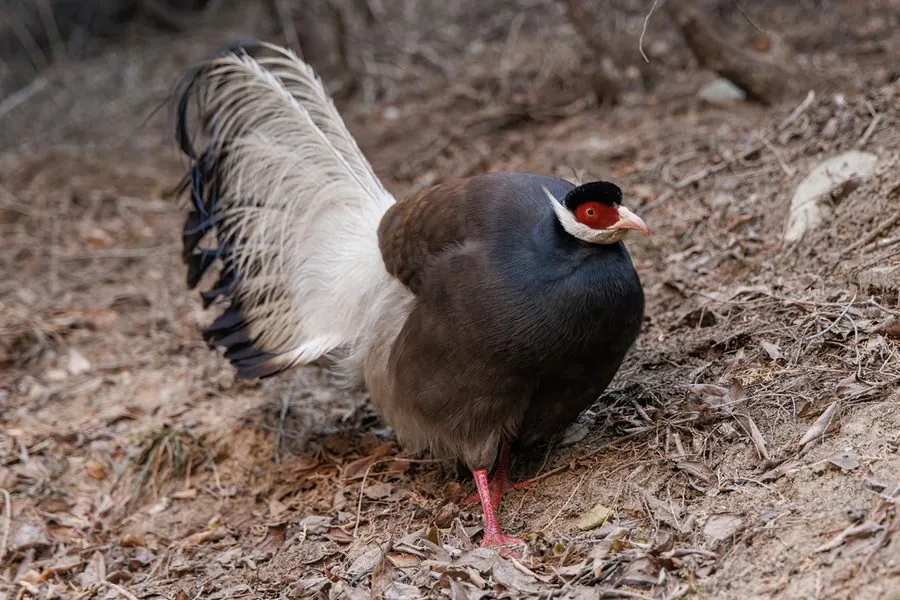

鸟类 · 动物界
褐马鸡 Crossoptilon mantchuricum

中国特有的珍稀雉类，通体浓褐色、头后两簇白色耳羽像竖起的马耳，尾羽散垂如马尾，被定为山西省鸟。
- 分类
- 门脊索动物门纲鸟纲目鸡形目科雉科属马鸡属
- 栖息环境
- 海拔 1100–2600 米的山地针阔混交林、针叶林与林缘灌丛
- 地理分布
- 中国特有种，分布于山西、河北、北京和陕西的部分山区
- 保护级别
- IUCN 易危（VU）；中国国家一级保护动物
物种志
褐马鸡体长 84–110 cm，体重 1.5–2.5 kg，尾羽几乎占了体长的一半。它通体呈浓褐色，头后有两簇白色的耳羽向后延伸、微微翘起，形状像竖起的马耳；尾羽蓬松散垂，宛如马尾，名字便由此而来。它的脸部裸露呈绯红色，腿和脚也是红色，在褐色的森林落叶中格外醒目。
褐马鸡是中国特有的珍稀雉类，分布在山西、河北、北京、陕西的部分山区，栖息于海拔 1100–2600 米的山地针阔混交林、针叶林和林缘灌丛。它们以植物根茎、嫩叶、种子为食，也吃昆虫，冬季常结成数十只的大群在林间雪地中觅食，受惊时多快速奔跑而不是起飞。每年 4–6 月在地面营巢，每窝产卵 4–8 枚，孵化约 26–28 天。由于分布区狭窄、种群数量有限，褐马鸡被列为易危物种和中国国家一级保护动物，也是山西省的省鸟。
形态与习性
- 食性植物根茎、嫩叶、种子，也吃昆虫
- 体长84–110 cm，尾羽约占一半
- 体重1.5–2.5 kg
- 繁殖每窝 4–8 枚卵，孵化约 26–28 天
- 寿命野外约 15 年
- 羽饰头后两簇白色耳羽向后延伸如马耳
- 文化地位山西省鸟，古代称“鹖”，武将冠饰由此而来
趣味知识
- 褐马鸡头后的两簇白色羽毛向后翘起，像竖起的马耳，尾羽散垂如马尾，名字由此而来。
- 它被定为山西省鸟，是中国特有的珍稀雉类，野外种群数量有限。
- 中国古代称褐马鸡为“鹖”，因其勇猛好斗，武将冠上常插鹖羽以示勇敢。
- 褐马鸡冬季会结成数十只的大群，在林间雪地中觅食。